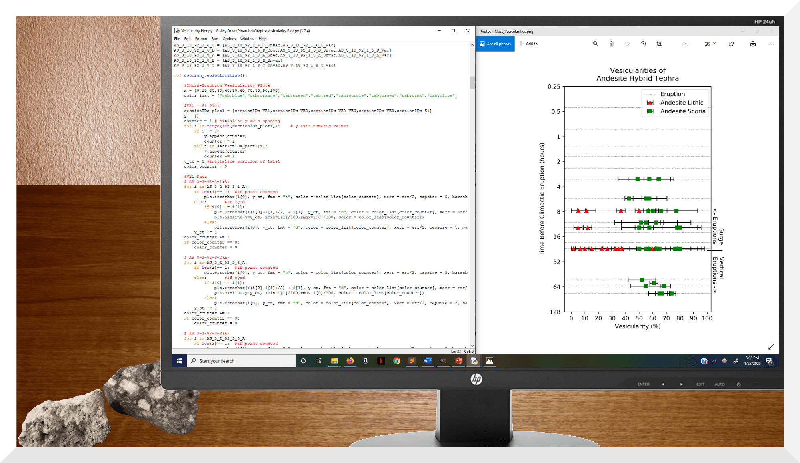

Undergraduate Thesis
In May 2018, I began conducting research under Dr. James Gardner, a Volcanologist at The University of Texas at Austin. I analyzed tephra (ejected volcanic rock) from the series of eruptions just prior to Mt. Pinatubo's notorious VEI 5 eruption in June 1991. My work has helped elucidate the processes responsible for the previously enigmatic compositional and behavioral progression of the preclimactic eruptions.
When I began collecting data, I conducted microscope analyses of the volumetric vesicle (solidified air bubble) percentage of the non-crystalline component of tephra. This allowed me to infer how degassing processes changed throughout the preclimactic sequence. Further, I had additional samples scanned with computed tomography (CT). Using Fiji (Mac's ImageJ), I then rendered the scan data and quantified the volumetric proportions of specific minerals, identifiable by distinct voxel intensities, in each sample. This allowed me to identify the compositional evolution's relationship to vesicle characteristics. To better visualize my data, I have implemented Python extensively, creating several graphics which are included in my thesis.
Now that I have finished acquiring data, I have begun writing my thesis: Magma Mixing and Degassing during the 1991 Preclimactic Eruptions at Mt. Pinatubo. I will have completed my thesis by May 2020, and I hope to have my work published shortly thereafter.